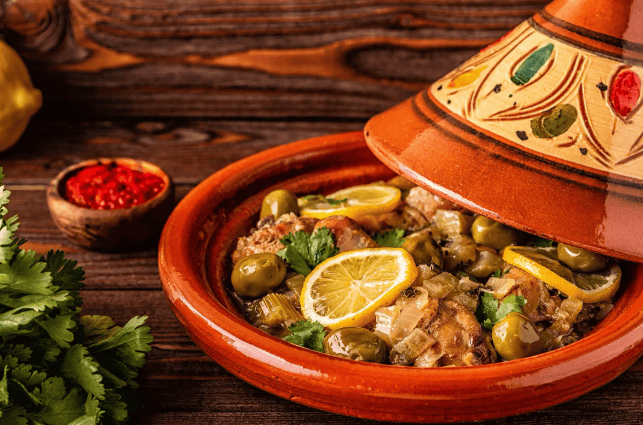

Recettes du Maroc
Découvrez les délices de la cuisine marocaine avec nos recettes traditionnelles et modernes.
Couscous Royal

Description : Un plat emblématique du Maroc à base de semoule de blé dur, accompagné de légumes variés, de viande, et souvent garni de raisins secs.
Ingrédients :
- 500 g de semoule de couscous
- 1 kg de viande (agneau et poulet)
- 3 carottes, coupées en rondelles
- 2 courgettes, coupées en dés
- 1 oignon, haché
- 1 boîte de pois chiches (400 g), égouttée
- 2 cuillères à soupe d'huile d'olive
- 1 cuillère à café de cumin
- 1 cuillère à café de cannelle
- Sel et poivre au goût
- Raisins secs (optionnel, pour la garniture)
- 2 litres de bouillon de légumes ou de viande
Instructions :
- Préparer le couscous : Dans un grand saladier, verser la semoule de couscous et ajouter une pincée de sel. Verser 500 ml d'eau bouillante sur le couscous, couvrir et laisser reposer pendant 10-15 minutes jusqu'à ce que la semoule absorbe l'eau. Égrainer le couscous avec une fourchette.
- Cuire la viande : Dans une grande casserole, chauffer l'huile d'olive à feu moyen. Ajouter l'oignon haché et faire revenir jusqu'à ce qu'il soit translucide. Ajouter les morceaux de viande, le cumin, la cannelle, le sel et le poivre. Faire dorer la viande de tous les côtés.
- Ajouter les légumes : Ajouter les carottes et les courgettes à la casserole. Verser le bouillon de légumes ou de viande jusqu'à ce qu'il recouvre les ingrédients. Porter à ébullition, puis réduire le feu et laisser mijoter à couvert pendant 45 minutes.
- Incorporer les pois chiches : Après 30 minutes de cuisson, ajouter les pois chiches dans la casserole et poursuivre la cuisson. Vérifiez l'assaisonnement et ajustez si nécessaire.
- Cuire le couscous à la vapeur : Dans un couscoussier ou un panier vapeur, placer le couscous égrené et le cuire à la vapeur pendant 20 minutes pour qu'il devienne léger et moelleux.
- Servir : Dans un grand plat, disposer le couscous au centre, entouré de la viande et des légumes. Garnir avec des raisins secs si désiré. Servir chaud, avec le bouillon à part.
Msemen
Description : Les msemen sont des crêpes feuilletées marocaines, souvent servies au petit-déjeuner ou comme collation, accompagnées de miel ou de sucre.
Ingrédients :
- 500 g de semoule fine
- 250 ml d'eau tiède
- 1 cuillère à café de sel
- 1 cuillère à soupe de sucre
- Huile pour le façonnage
Instructions :
- Préparer la pâte : Dans un grand saladier, mélanger la semoule, le sel et le sucre. Ajouter progressivement l'eau tiède tout en pétrissant jusqu'à obtenir une pâte lisse.
- Diviser la pâte : Diviser la pâte en petites boules (de la taille d'une mandarine) et les huiler légèrement. Couvrir et laisser reposer pendant 30 minutes.
- Étaler les boules : Sur un plan de travail huilé, étaler chaque boule en une fine couche. Plier les bords pour former un carré.
- Cuire les msemen : Dans une poêle chaude avec un peu d'huile, faire cuire chaque msemen des deux côtés jusqu'à ce qu'ils soient dorés et croustillants.
- Servir : Servir chaud avec du miel ou du sucre selon votre goût.
Tajine de Poulet aux Olives

Description : Un plat savoureux de poulet mijoté avec des olives et des épices, souvent servi avec du pain.
Ingrédients :
- 1 kg de poulet, découpé en morceaux
- 200 g d'olives vertes
- 2 oignons, hachés
- 3 gousses d'ail, émincées
- 2 cuillères à soupe d'huile d'olive
- 1 cuillère à café de cumin
- 1 cuillère à café de paprika
- 1 cuillère à café de gingembre
- Sel et poivre au goût
- 1 bouquet de coriandre fraîche, hachée
- 500 ml d'eau
Instructions :
- Faire revenir le poulet : Dans une grande casserole, chauffer l'huile d'olive à feu moyen. Ajouter le poulet et le faire dorer de tous les côtés.
- Ajouter les oignons et les épices : Ajouter les oignons hachés, l'ail, le cumin, le paprika et le gingembre. Faire revenir jusqu'à ce que les oignons soient translucides.
- Ajouter l'eau : Verser l'eau dans la casserole, porter à ébullition, puis réduire le feu et laisser mijoter à couvert pendant 45 minutes.
- Incorporer les olives : Ajouter les olives et la coriandre hachée dans la casserole. Laisser mijoter encore 15 minutes.
- Servir : Servir chaud avec du pain ou du riz.
Briouates au Poulet

Description : Des triangles croustillants farcis au poulet et aux épices, souvent servis en entrée.
Ingrédients :
- 300 g de viande de poulet, cuite et émiettée
- 1 oignon, haché
- 2 cuillères à soupe d'huile d'olive
- 1 cuillère à café de paprika
- 1 cuillère à café de cumin
- 1 cuillère à café de coriandre
- 4 feuilles de brick
- 1 œuf battu (pour la dorure)
- Sel et poivre au goût
Instructions :
- Préparer la farce : Dans une poêle, chauffer l'huile d'olive. Ajouter l'oignon et faire revenir jusqu'à ce qu'il soit doré. Ajouter le poulet émietté, le paprika, le cumin, la coriandre, le sel et le poivre. Mélanger et cuire pendant quelques minutes.
- Assembler les briouates : Prendre une feuille de brick, plier en deux et ajouter une cuillère de farce. Plier en triangle jusqu'à ce que la farce soit complètement enfermée.
- Cuire les briouates : Préchauffer le four à 180 °C. Placer les briouates sur une plaque de cuisson, badigeonner avec l'œuf battu. Cuire au four pendant 20 minutes, jusqu'à ce qu'elles soient dorées.
- Servir : Servir chaud, accompagné d'une sauce au yaourt ou d'une sauce piquante.